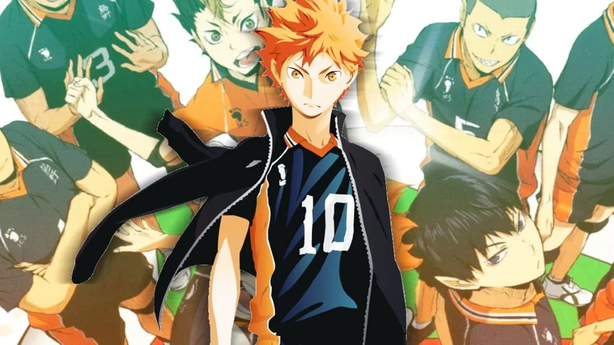

Sports
Training for and participating in a sport take priority, with the goal of furthering one's athletic abilities—either to win a competition.
Learn MoreTraining for and participating in a sport take priority, with the goal of furthering one's athletic abilities—either to win a competition.
Learn More“Psychological Genre” means the story wrapped in certain situation where the characters face problems that psychologically haunting.
Learn MoreOne of the most popular genres is science fiction anime. Sci-fi anime are set in imaginative and futuristic worlds filled with technologies.
Learn MoreWhether aiming for a specific goal or just struggling to survive, the main character is thrust into unfamiliar situations or lands and faces unexpected dangers.
Learn MoreSlice of life anime are narratives which take place in a everyday setting, such as a high school, and which focus on human relationships that are often romantic in nature.
Learn MoreShōnen manga refers to manga aimed at an audience of adolescent boys, with the primary target audience alternately defined as 9 to 18 years old and as 12 to 18 years old.
Learn More